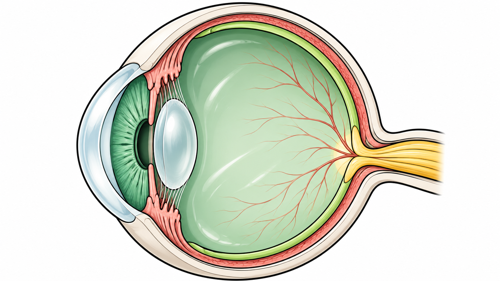

Изучение строения органа зрения (на 3D атласе)
Исследование объёмной модели позволяет рассмотреть оболочки глазного яблока, прозрачные структуры глаза и место выхода зрительного нерва.

Подготовка к исследованию
Глазное яблоко расположено в глазнице и окружено вспомогательными структурами. В его стенке различают три оболочки: наружную фиброзную (склера, переходящая спереди в роговицу), среднюю сосудистую и внутреннюю (сетчатку).
Работа с атласом
Модель можно вращать и увеличивать. Если доступны анатомические подписи или переключение отдельных частей, используйте их для уточнения расположения структур.
Что необходимо определить
Взаимное расположение оболочек глаза, прозрачных структур и зрительного нерва, а также последовательность прохождения света до сетчатки.
3D-атлас органа зрения
Поворачивайте модель, рассматривайте глаз спереди и в разрезе, находите нужные структуры. Некоторые детали могут быть частично скрыты другими тканями.
Ход работы
Глазное яблоко и глазница
Найдите глазное яблоко. Определите, где оно располагается в глазнице. Укажите, какие структуры располагаются перед глазным яблоком и какая часть выходит из его заднего отдела.
Оболочки глазного яблока
Найдите и назовите три оболочки глаза. Установите, какая из них наружная, какая средняя, а какая внутренняя. Определите, какая прозрачная структура является передним продолжением наружной оболочки.
Внутренние структуры
Найдите роговицу, радужку, зрачок, хрусталик, стекловидное тело, сетчатку и зрительный нерв. Определите, какие структуры лежат перед хрусталиком, а какие — позади него.
Последовательность прохождения света
Восстановите последовательность, записав вместо пропусков названия структур.
Объясните, почему зрачок называют отверстием в радужке, а не отдельной прозрачной тканью.
Аккомодация
Найдите хрусталик и ресничное тело. Определите, какая структура изменяет свою кривизну при переводе взгляда с далёких предметов на близкие. Укажите, какие структуры обеспечивают это изменение.
Место выхода зрительного нерва
Найдите зрительный нерв в задней части глазного яблока. Определите место его выхода из сетчатки. Объясните, почему эту область называют слепым пятном и как отсутствие фоторецепторов связано с её особенностями.
Вывод
Сформулируйте вывод о связи строения глаза с его функцией. Объясните роль защитных оболочек, прозрачных структур и сетчатки, а также значение зрительного нерва в передаче информации в головной мозг.